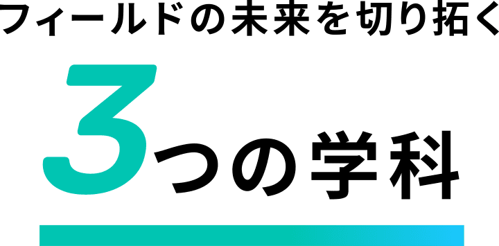
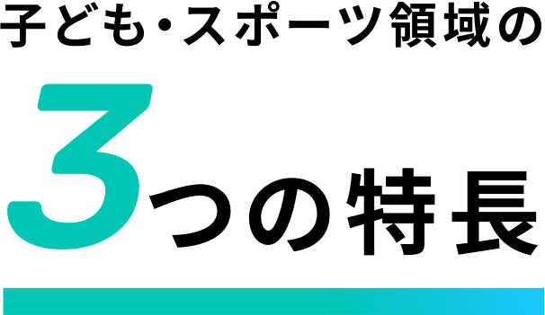

子ども・スポーツ領域
未来の保育、スポーツビジネスの
最先端を学ぶ！
今や、幼児保育を目指すなら
資格取得がゴールではありません。
スポーツビジネスにも新たな発想が求められています。
テクノスでのプラスαの知識や経験が、
未来の保育や最先端のスポーツビジネスを生み出します。

スポーツビジネス科SPORTS BUSINESS
- 目指せる職種
- パーソナルトレーナー／スポーツインストラクター／スポーツ指導員／スポーツ施設管理／スポーツイベント企画・運営／クラブチームスタッフ／サッカーコーチ 等

実践型学習
学生がスポーツクラブを運営！
スポーツビジネスを実践的に学ぶ。
- # スポーツクラブ運営
- # 学科横断型ゼミ
学生が「テクノスポーツクラブ」というスイミングスクールとサッカースクールを運営したり、地域のスポーツイベントを企画・開催するなど、実践を通した学びが特色です。
そのベースとなるのが、専門学校には珍しいゼミ。スポーツビジネス科とこども学科こどもスポーツコースの学生たちがスポーツの魅力や課題を考えていき、社会の中で応用していきます。また、学科横断型ゼミにより、スポーツビジネス科の学生が、ゲームクリエーター科と協働し、地域の子ども向けに「eスポーツ」クラスを立ち上げています。
+αの学び
ダンス、英会話、心理学、VR…
保育者としての可能性を広げる！
- # 全32学科とのコラボゼミ
- # 大学の科目を履修
こども学科では、「音楽」「英語」「スポーツ」からコース選択が可能。全32学科とコラボするゼミにより、デザイン、演劇、テクノロジーなどを学び、資格＋αの力を身につけることもできます。例えば、デジタル教材に強い保育者を目指すなど、将来の可能性が広がります。また、限りなく学費の負担が少なく大学の科目を履修できる大学コースを選択すると、心理学を専攻したり、幼児保育学科から教育専攻科に進むことで小学校教諭免許を取得できるなど、専門性も深められます。
海外研修
スポーツ大国・アメリカの大学の
トレーナー研修に参加！
- # 海外研修
- # アスレチックトレーナー
姉妹校・ホープ大学は、アメリカのミシガン州にあるスポーツに特化して学べる大学。留学期間中では、語学やアスレチックトレーナーについての講義はもちろん、アメリカの文化やスポーツ環境なども学びます。将来、医師やトレーナーを目指す現地学生との交流も行います。コロナ禍においても、オンラインでのプログラムを実施しました。
名門クラブ「インテル・ミラノ」の
サッカー指導メソッドを学ぶ！
インテル・ミラノと業務提携を結び、サッカースクール「インテルアカデミージャパン」を運営。地域の子どもたちを対象に、サッカーを通じた人材育成を行っています。現場での実習に加え、イタリアミラノ研修も実施。インテル・ミラノの指導法や運営方法をイタリア人コーチから学びます。
詳細記事を見る地域の子どもたちを対象にした
実践の場がたくさんある！
キャンパス内にある「きしゃぽっぽ保育園」は、学生たちの実習の場です。ここで、こども学科こども英語コースの学生は、他学科の学生との合同授業で英語指導を行っています。また、こども学科スポーツコースの学生たちは、スポーツビジネス科の学生が運営するスポーツクラブの活動に参加しています。
詳細記事を見る